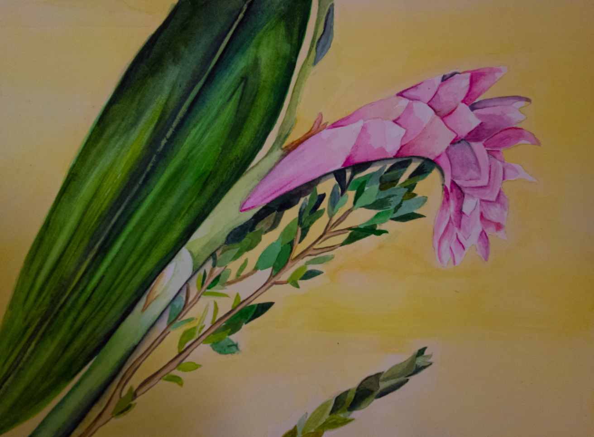

Inktober - esquenta
24 DE SETEMBRO DE 2016 ~ 2 COMENTÁRIOS
Outubro está chegando e com ele o Inktober. Ele é projeto criado pelo ilustrador Jake Parker que visa aprimorar as capacidades artísticas do participantes, já que o participante precisa durante todo o mês de outubro fazer um desenho por dia.
Eu sei que ainda estamos em Setembro, mas já estou me preparando psicologicamente porque no ano passado eu parei no meio do caminho. Eu fiz 20 desenhos, ou seja, deixei de fazer 11 desenhos. Para me preparar melhor, comecei a pesquisar algumas referências, temas e inspirações. Eu guardei todos os arquivos que achei interessante numa pasta que criei no computador chamada Inktober 2016.

Espero poder terminar o desafio tranquilamente neste ano. Espero que os testes do meio do período não atrapalhem a minha participação. No mais, resolvi começar a praticar um pouquinho e desenhar uma personagem, Mia Wallace, que eu acho muito foda do filme Pulp Fiction. Vou aproveitar o Inktober para desenhar vários personagens incríveis.
Como também pretendo desenhar alguns tipos de plantas usando aquarela e algumas tortas usando markers, resolvi treinar um pouco para entrar no clima❤. No próximo post, deixarei os desenhos de lado e falarei da viagem que fiz nas férias, já que o mês de outubro será só sobre desenhos e mais desenhos! Espero que vocês curtam os desenhos!! E se tiverem alguma sugestão de tema, deixem nos comentários😀. Para rever a minha participação do ano passado cliquem aqui!